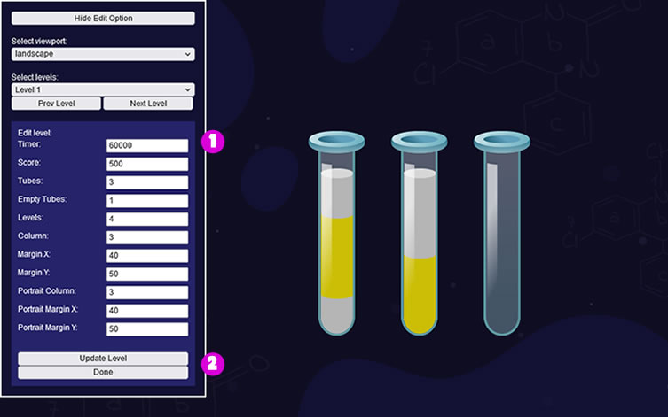

Documentation
Liquid Sort
Thank you so much for purchasing our item from codecanyon.
- Version: 1.9
- Author: demonisblack
- Created: 12 December, 2022
- Update: 25 July, 2025
If you have any questions that are beyond the scope of this help file, Please feel free to email via Item Support Page.
Overview
Liquid Sort is a HTML5 game where you have to sort the colored water in the glasses until all colors in the same glass.
The ZIP package contains the game with 1280×768 and 768×1024 resolution that scales proportionally to fit current screen device.
Installation
Follow the steps below to setup your game:
- To install the game just upload folder /game to your hosting web server using FTP or localhost in order to use it on your website. The game won't run locally with some browser like Chrome due to some security mode.
- Below is the folder structure and needs to be uploaded to your website or localhost root directory:
game/assets- Images & audio filesgame/css- Stylesheet filesgame/icons- Website iconsgame/js- Javacript filesgame/edit.html- Built-in Editor pagegame/editTools.html- Built-in Editor Toolgame/share.jpg- Social share imagegame/share.php- Social share filegame/index.html- Homepage
- You will need a website that runs PHP to make facebook share button work, and make sure to change Facebook Open Graph meta and Twitter meta in index.html, just replace
[GAME_URL]to your game URL.
<!-- for Facebook -->
<meta property="og:url" content="[GAME_URL]" />
<meta property="og:image" content="[GAME_URL]/share.jpg" />
<!-- for Twitter -->
<meta name="twitter:url" content="[GAME_URL]" />
<meta name="twitter:image" content="[GAME_URL]/share.jpg" />
Settings
Follow the steps below to customize your game:
You can easily customize game text and settings in game.js file
var bubbles_arr = [
"assets/bubble_01.png",
"assets/bubble_02.png",
"assets/bubble_03.png",
"assets/bubble_04.png",
"assets/bubble_05.png",
];
var colors_arr = [
{fill:"#07E021", surface:"#64FF76"},
{fill:"#8D06C6", surface:"#9A29D6"},
{fill:"#B51D1D", surface:"#DD4545"},
{fill:"#E27C03", surface:"#F5AA1B"},
{fill:"#203DE5", surface:"#4363ED"},
{fill:"#0EC1C1", surface:"#20DEE2"},
{fill:"#0ABF71", surface:"#27D894"},
{fill:"#DD0AA6", surface:"#EF2EC6"},
{fill:"#B5B5B5", surface:"#D6D6D6"},
{fill:"#333333", surface:"#545454"},
{fill:"#CCBE06", surface:"#EDE14C"},
{fill:"#CC50A9", surface:"#E073C7"},
];
var colorsHidden_arr = [
{fill:"#5D5D5D", surface:"#858585"},
{fill:"#707070", surface:"#939393"},
{fill:"#7F7F7F", surface:"#9F9F9F"},
{fill:"#8C8C8C", surface:"#A7A7A7"},
{fill:"#949494", surface:"#AEAEAE"},
];
//game settings
var gameSettings = {
timer:{
color:"#fff",
width:400,
height:5,
radius:3
},
score:30,
moveSpeed:.2,
fillSpeed:1,
}
//game text display
var textStrings = {
selectTube:"SELECT TUBE",
selectLevel:"SELECT LEVEL",
level:"LVL[NUMBER]",
clear:"LVL[NUMBER] CLEAR",
score:"[NUMBER]PTS",
timesup:"TIME\'S UP!",
exitTitle:'EXIT GAME',
exitMessage:'ARE YOU SURE\nYOU WANT TO\nQUIT THE GAME?',
share:'SHARE YOUR SCORE',
resultTitle:'GAME OVER',
resultLevelTitle:'LEVEL [NUMBER]',
resultDesc:'[NUMBER]PTS'
}
//Social share, [SCORE] will replace with game score
const shareSettings = {
enable:true,
options:['facebook','twitter','whatsapp','telegram','reddit','linkedin'],
shareTitle:'Highscore on Liquid Sort is [SCORE]PTS',
shareText:'[SCORE]PTS is mine new highscore on Liquid Sort Game game! Try it now!',
customScore:true, //share a custom score to Facebook, it use customize share.php (Facebook and PHP only)
gtag:true //Google Tag
}
The audio can be easily disabled to avoid compatibility issues in sound.js file:
const enableDesktopAudio = true; //audio for dekstop
const enableMobileAudio = true; //audio for mobile and tablet
The sound and music can be easily mute in sound.js file:
const muteSoundOn = false; //mute sound
const muteMusicOn = false; //mute music
Tubes
You can easily customize tubes in tubes_arr in game.js file, it store all tubes data and below is the explanation of each most important objects:
var tubes_arr = [
{
imageBack:"assets/tube_back_01.png",
imageFront:"assets/tube_front_01.png",
regX:44,
regY:310,
fillW:50,
fillH:250,
tubeW:86,
tubeH:300,
perspective:true,
shape:[
{x:-25, y:-277},
{x:-25, y:-141},
{x:-25, y:-22},
{x:-19, y:1},
{x:1, y:0},
{x:18, y:0},
{x:25, y:-22},
{x:25, y:-132},
{x:25, y:-276},
{x:1, y:-271},
{x:-25, y:-277},
],
},
]
imageBack- back image filesimageFront- front image filesregX- center of image position xregY- center of image position yfillW- liquid fill widthfillH- liquid fill heighttubeW- tube widthtubeH- tube heightperspective- water in perspective (true/false)shape- array of masking path
Levels
You can easily customize levels in levelSettings in levels.js file, it store all levels data and below is the explanation of each most important objects:
var levelSettings = [
{
timer:60000,
score:500,
tubes:3,
empty:1,
levels:4,
hidden:false,
column:3,
marginX:40,
marginY:50,
portrait:{
column:3,
marginX:40,
marginY:50,
}
}
]
timer- level timerscore- level scoretubes- total tubesempty- total empty tubeslevels- total levels to fill coloured waterhidden- all tube fill colors are hidden except the top (true/false)column- total column layoutmarginX- margin x between tubesmarginY- margin y between tubesportrait- layout property for portrait
Built-in Editor
This is the section where you can edit the tube shape with the tool by running edit.html. The page start with edit tools, click generate button to export the array when you complete editing, replace the new array in tubes_arr in game.js file.
1. Basic Options
- First select the viewport mode, then select the levels you want to edit.
- Option to add, remove and sort levels.
- This section is to edit level, and also output the new array objects.
- Edit Level - edit puzzle settings
- Edit Tubes - edit tubes settings
- Generate Array - click to generate new Array, copy and replace into
levelSettingsinlevel.jsfor new update
2. Edit level
- Edit level settings:
timer- level timerscore- level scoretubes- total tubesempty- total empty tubeslevels- total levels to fill coloured watercolumn- total column layoutmarginX- margin x between tubesmarginY- margin y between tubesportrait- layout property for portrait
- Click update color to update new position, click done to save and go back main options.
3. Edit Tube
- Select the tube to edit, option to add, remove tube.
- This section is to edit tube, and also output the new Array.
- Edit Tube - edit tube settings
- Generate Array - click to generate array, copy and replace
tubes_arrarray ingame.jsfor new update
4. Edit Tube Shape
- Edit tube:
imageBack- back image filesimageFront- front image filesregX- center of image position xregY- center of image position yfillW- liquid fill widthfillH- liquid fill heighttubeW- tube widthtubeH- tube heightperspective- water in perspective (true/false)
- Edit water fill mask
- Doubleclick on stage to add new point
- Move the point on stage to adjust the masking shape
- Click remove point to remove selected point on stage
- Click update image to load new assets, click done to save and go back main options.
HTML Structure
Structure used to design web pages including HTML structure, CSS Files, Javascript and more...
The page start with the loader wrapper that covering the whole screen in the body. It shows loader progress when calls the function initPreload()
<!-- PERCENT LOADER START-->
<div id="mainLoader"><img src="assets/loader.png" /><br><span>0</span></div>
<!-- PERCENT LOADER END-->
This section is for browser not support page when calls the function checkBrowser(). It shows error message when detect the browser does not support canvas.
<!-- BROWSER NOT SUPPORT START-->
<div id="notSupportHolder">
<div class="notSupport">YOUR BROWSER ISN'T SUPPORTED.<br/>PLEASE UPDATE YOUR BROWSER IN ORDER TO RUN THE GAME</div>
</div>
<!-- BROWSER NOT SUPPORT END-->
Follow by one canvas tag in the body. The game start initiatie by calls the main function of the game initMain().
<!-- CANVAS START-->
<div id="canvasHolder">
<canvas id="gameCanvas" width="1280" height="768"></canvas>
</div>
<!-- CANVAS END-->
CSS Files
We're using two CSS files in this game. The first one is normalize.css a generic reset file. Many browser interpret the default behavior of html elements differently. By using a general reset CSS file, we can work round this. This file also contains some general styling, such as anchor tag colors, font-sizes, etc. Keep in mind, that these values might be overridden somewhere else in the file.
The second file main.css contains all of the specific stylings for the canvas and some hack to be fully compatible with all most popular mobile device.
JavaScript
This game using Javascript files below.
-
jquery.min.js- is a cross-platform JavaScript library designed to simplify the client-side scripting of HTML.
-
mobile-detect.js- is a loose port of Mobile-Detect to JavaScript. This script will detect the device by comparing patterns against a given User-Agent string.
-
createjs.min.js- is a suite of modular libraries and tools which work together to create interactive content on open web technologies via HTML5.
-
TweenMax.min.js- is an extremely fast, lightweight, and flexible animation tool that serves as the foundation of the GreenSock Animation Platform (GSAP).
-
js.cookie.js- is a simple, lightweight JavaScript API for handling cookies.
-
The game have the following js files
init.js- check if browser or device supportloader.js- loader to load all game imagesmain.js- initiate game setup and browser resize functionmobile.js- mobile orientation changecanvas.js- canvas setup and resizesound.js- sound eventedit.js- editor toollevels.js- levels settingsgame.js- game play and logicsplugins.js- additonal useful plugins
Game Flow
- The
index.htmlfile startinit.jsfor browser detection - If browser is supported, init
loader.jsto start load asserts with loading progress - For mobile the rotate instruction shows when device is in portrait view, detect by
mobile.js - When all asserts contained in /assets folder are loaded, the game start construct
canvas.jsfrommain.jsthats shows game menu - If user click Play button in game menu, the game will start with
game.js - If user click on any two glasses, it will start fill with the coloured water
- If user seperated all the liquids in the glasses into same color, the game will proceed to next level
- When timer is run out, the game will end and over
- If user click the main button in game result, it will back to main
Game Functions
The most important functions used for page.
- checkBrowser() This function is runs for browser detection
- checkMobileEvent() This function runs for mobile event
The most important functions used for game.
- initMain() This function build canvas
- startGame() This function start gameplay
- updateGame() This function manages the game loop
- stopGame() This function stop gameplay
- saveGame() This function save game score
Game Assets
You can edit the design files and easily reskin the game graphics.
The game contain /design folder which include following:
liquidsort_1280x768.psd- with layer folders below- Option
- Result
- Gameplay
- Landing
The folder /game/assets contains all the images of the game that can be replaced. Is better to have the same size of the old ones if you want to reskin the game graphic without coding.
Compatibility
This game is build for Desktop browsers that support HTML5 canvas. Any mobile/tablet should work in landscape and portrait view, but they are not officially supported.
Add-ons
The add-on is an additional feature added to the game and it requires the base game in order to work, below are the add-ons that are compatible with this game:

This game is compatible with Scoreboard for HTML5 Games, it is a add-ons page where user can submit score and view top 10 leaderboard. You can get it here.
Source & Credits
Fonts:
- Comicy from file Khurasan
Images:
- N/A
Sounds:
- ui sound 8.wav from file nezuai
- Notification.wav from file sophieciruela
- Notification Sound from file BeezleFM
- Pop up from file Ryanz-Official
- strange notification from file sleepyhead16
- Pop-up from file IENBA
- incline 5up.wav from file carloschoconta
- incline 2down.wav from file carloschoconta
- incline 2up.wav from file carloschoconta
- Pouring Liquid.wav from file Dvideoguy
- 15-1_Bottle_close_pouring.WAV from file 16HPanskaKanclirova_Victoria
- Pouring Water Into A Cup.wav from file Wenjun
- Echoed Blip from file copyc4t
- marimba do re mi fa so.WAV from file pogmothoin
- Atmospheric Notification 2.mp3 from file original_sound
- Resolutions from file Scott Buckley
Support
If this documentation doesn't answer your questions, you can send us email via Item Support Page
Here you can find plugin & other documentation that support this game.
- Wordpress Site - By using Scoreboard for HTML5 Games plugin, you can embed HTML5 game into WordPress post or page. Get the Plugin
- Ad Placeholder - Help simulate ads on HTML5 Games, you can integrate and display static and takeover ads through different Ads Serving Platform. Documentation
- Instant Games – Facebook - Guide you through integrating Facebook Instant Games API in our HTML5 Games. Documentation
Don’t forget to Rate this game
Go to your Codecanyon Profile > Downloads Tab > & then You can Rate & Review for our game.
Thank You.
Changelog
See what's new added, changed, fixed, improved or updated in the latest versions.
Version 1.9
- Rebuilt HTML5 template
- Improved scaling with devicePixelRatio
- Added social share (Telegram, Reddit, Linkedin)
Version 1.8
- Added hidden colors option
Version 1.7
- Added built-in tool to edit levels & tubes
- Added 90 levels
Version 1.6
- Fixed game issue
Version 1.5
- Fixed level issue
Version 1.4
- Fixed tube focus and autofill issue
Version 1.3
- Fixed autofill issue
Version 1.2
- Added autofill option
Version 1.1
- Updated sound function
- Added music button
Version 1.0
Initial Release